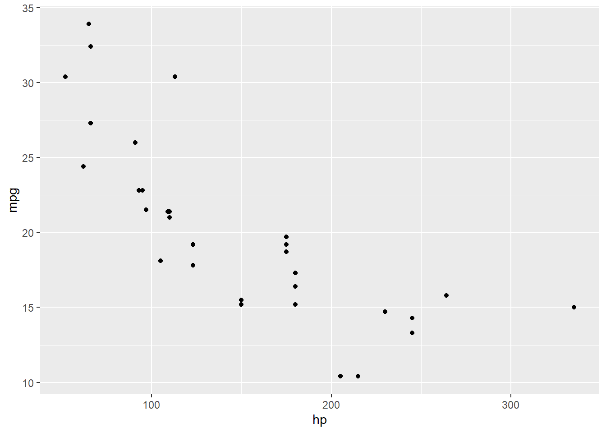
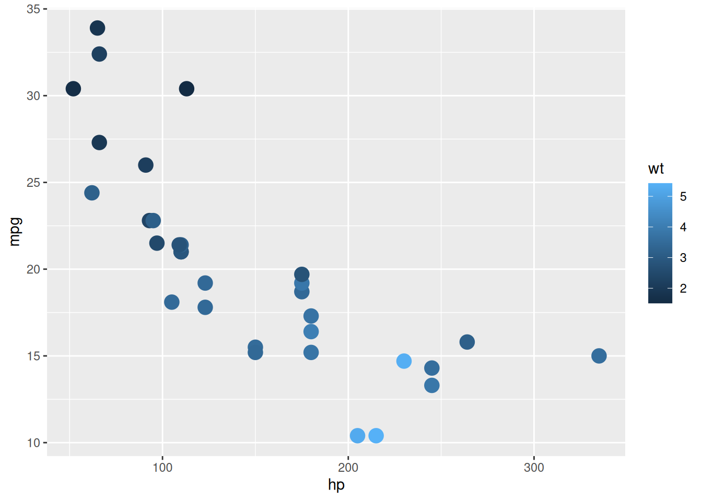
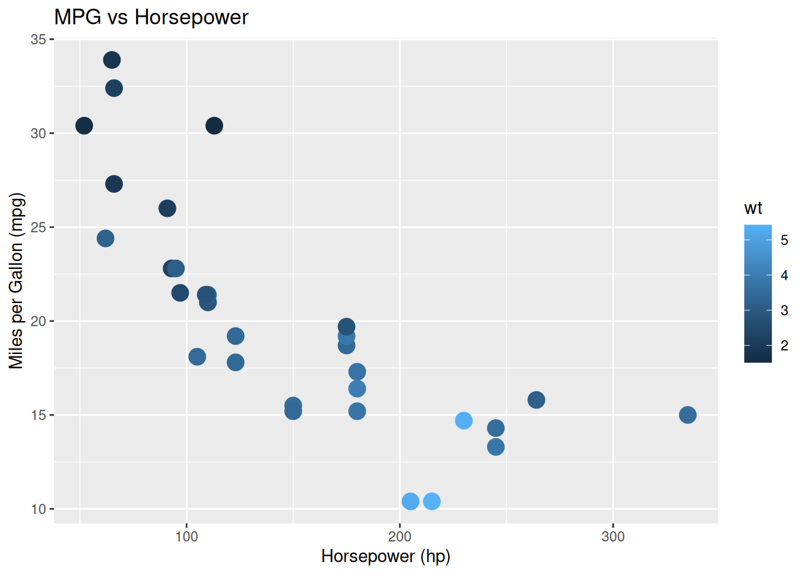

install.packages("dplyr")
install.packages("tidyr")Basic syntax and vocabulary for data wrangling and graphics
Lecture notes
1 Motivation
After a dataset is loaded, we commonly have to go through steps such as checking, cleaning, pruning, reshaping, reformatting etc… The R package dplyr contains functions and a common set of rules (syntax/grammar) to do that. These package needs to be installed as:
and loaded
library(dplyr)
library(tidyr)In this session, we are going to work with a toy dataset included in R, the mtcars dataset
2 Data wrangling
In this session, we are going to work with a toy dataset included in R, the mtcars dataset. For your convenience, this dataset is stored on the data folder:
# loading the mtcars dataset
library(readr) # needed to call read_csv()
library(magrittr) # needed for the pipe operator %>%
mtcars_data = read_csv("https://data-integration-department-woah.github.io/DS_Training_pub/data/mtcars.csv")
# checking
mtcars_data %>% dim()[1] 32 12mtcars_data %>% colnames() [1] "make" "mpg" "cyl" "disp" "hp" "drat" "wt" "qsec" "vs" "am"
[11] "gear" "carb"# checking a specific variable
mtcars_data$gear # return all values in the console [1] 4 4 4 3 3 3 3 4 4 4 4 3 3 3 3 3 3 4 4 4 3 3 3 3 3 4 5 5 5 5 5 4mtcars_data$gear %>% unique() # return the set of unique values[1] 4 3 5mtcars_data$gear %>% unique() %>% sort() # return the set of unique values and sort them [1] 3 4 52.1 Filtering
We can retain rows of a dataset matching a condition with filter()
# creating a subset of the data with only cars having 4 gears
dat0 = mtcars_data %>% filter(gear == 4)
dat0# A tibble: 12 × 12
make mpg cyl disp hp drat wt qsec vs am gear carb
<chr> <dbl> <dbl> <dbl> <dbl> <dbl> <dbl> <dbl> <dbl> <dbl> <dbl> <dbl>
1 Mazda RX4 21 6 160 110 3.9 2.62 16.5 0 1 4 4
2 Mazda RX4 … 21 6 160 110 3.9 2.88 17.0 0 1 4 4
3 Datsun 710 22.8 4 108 93 3.85 2.32 18.6 1 1 4 1
4 Merc 240D 24.4 4 147. 62 3.69 3.19 20 1 0 4 2
5 Merc 230 22.8 4 141. 95 3.92 3.15 22.9 1 0 4 2
6 Merc 280 19.2 6 168. 123 3.92 3.44 18.3 1 0 4 4
7 Merc 280C 17.8 6 168. 123 3.92 3.44 18.9 1 0 4 4
8 Fiat 128 32.4 4 78.7 66 4.08 2.2 19.5 1 1 4 1
9 Honda Civic 30.4 4 75.7 52 4.93 1.62 18.5 1 1 4 2
10 Toyota Cor… 33.9 4 71.1 65 4.22 1.84 19.9 1 1 4 1
11 Fiat X1-9 27.3 4 79 66 4.08 1.94 18.9 1 1 4 1
12 Volvo 142E 21.4 4 121 109 4.11 2.78 18.6 1 1 4 22.2 Re-arranging rows with arrange()
We can arrange rows of a data set with arrange(), for example by car make or mpg of gears:
# creating a dataset with same variables but rows sorted by mpg
dat1 = mtcars_data %>% arrange(mpg)
dat1# A tibble: 32 × 12
make mpg cyl disp hp drat wt qsec vs am gear carb
<chr> <dbl> <dbl> <dbl> <dbl> <dbl> <dbl> <dbl> <dbl> <dbl> <dbl> <dbl>
1 Cadillac F… 10.4 8 472 205 2.93 5.25 18.0 0 0 3 4
2 Lincoln Co… 10.4 8 460 215 3 5.42 17.8 0 0 3 4
3 Camaro Z28 13.3 8 350 245 3.73 3.84 15.4 0 0 3 4
4 Duster 360 14.3 8 360 245 3.21 3.57 15.8 0 0 3 4
5 Chrysler I… 14.7 8 440 230 3.23 5.34 17.4 0 0 3 4
6 Maserati B… 15 8 301 335 3.54 3.57 14.6 0 1 5 8
7 Merc 450SLC 15.2 8 276. 180 3.07 3.78 18 0 0 3 3
8 AMC Javelin 15.2 8 304 150 3.15 3.44 17.3 0 0 3 2
9 Dodge Chal… 15.5 8 318 150 2.76 3.52 16.9 0 0 3 2
10 Ford Pante… 15.8 8 351 264 4.22 3.17 14.5 0 1 5 4
# ℹ 22 more rows2.3 Selecting columns
We can select a subset of columns with select()
# creaintg a subset of the data containing only variables mpg and cyl
dat2 = mtcars_data %>% select(mpg,cyl)
dat2# A tibble: 32 × 2
mpg cyl
<dbl> <dbl>
1 21 6
2 21 6
3 22.8 4
4 21.4 6
5 18.7 8
6 18.1 6
7 14.3 8
8 24.4 4
9 22.8 4
10 19.2 6
# ℹ 22 more rows2.4 Creating a new variable with mutate()
We can create a new variable, for example the power to weight ratio, defined as hp/wt with mutate() as:
# creating a new dataset with new variable ratio, defined as hp/wt
dat3 = mtcars_data %>% mutate(ratio = hp/wt)
dat3# A tibble: 32 × 13
make mpg cyl disp hp drat wt qsec vs am gear carb ratio
<chr> <dbl> <dbl> <dbl> <dbl> <dbl> <dbl> <dbl> <dbl> <dbl> <dbl> <dbl> <dbl>
1 Mazd… 21 6 160 110 3.9 2.62 16.5 0 1 4 4 42.0
2 Mazd… 21 6 160 110 3.9 2.88 17.0 0 1 4 4 38.3
3 Dats… 22.8 4 108 93 3.85 2.32 18.6 1 1 4 1 40.1
4 Horn… 21.4 6 258 110 3.08 3.22 19.4 1 0 3 1 34.2
5 Horn… 18.7 8 360 175 3.15 3.44 17.0 0 0 3 2 50.9
6 Vali… 18.1 6 225 105 2.76 3.46 20.2 1 0 3 1 30.3
7 Dust… 14.3 8 360 245 3.21 3.57 15.8 0 0 3 4 68.6
8 Merc… 24.4 4 147. 62 3.69 3.19 20 1 0 4 2 19.4
9 Merc… 22.8 4 141. 95 3.92 3.15 22.9 1 0 4 2 30.2
10 Merc… 19.2 6 168. 123 3.92 3.44 18.3 1 0 4 4 35.8
# ℹ 22 more rows2.5 Combining several operations with multiple pipes
Multiple data wrangling operations can be combined into a single, longer R expression as
dat5 = mtcars_data %>%
filter(gear == 4) %>% # only 4-gear cars
arrange(mpg) %>% # arranging by mpg
mutate(ratio = hp/wt) # new variable
dat5# A tibble: 12 × 13
make mpg cyl disp hp drat wt qsec vs am gear carb ratio
<chr> <dbl> <dbl> <dbl> <dbl> <dbl> <dbl> <dbl> <dbl> <dbl> <dbl> <dbl> <dbl>
1 Merc… 17.8 6 168. 123 3.92 3.44 18.9 1 0 4 4 35.8
2 Merc… 19.2 6 168. 123 3.92 3.44 18.3 1 0 4 4 35.8
3 Mazd… 21 6 160 110 3.9 2.62 16.5 0 1 4 4 42.0
4 Mazd… 21 6 160 110 3.9 2.88 17.0 0 1 4 4 38.3
5 Volv… 21.4 4 121 109 4.11 2.78 18.6 1 1 4 2 39.2
6 Dats… 22.8 4 108 93 3.85 2.32 18.6 1 1 4 1 40.1
7 Merc… 22.8 4 141. 95 3.92 3.15 22.9 1 0 4 2 30.2
8 Merc… 24.4 4 147. 62 3.69 3.19 20 1 0 4 2 19.4
9 Fiat… 27.3 4 79 66 4.08 1.94 18.9 1 1 4 1 34.1
10 Hond… 30.4 4 75.7 52 4.93 1.62 18.5 1 1 4 2 32.2
11 Fiat… 32.4 4 78.7 66 4.08 2.2 19.5 1 1 4 1 30
12 Toyo… 33.9 4 71.1 65 4.22 1.84 19.9 1 1 4 1 35.43 A first look at plotting
3.1 Basic ggplot syntax
A scatter plot of mpg against hp:
library(ggplot2)
mtcars_data %>% # what data?
ggplot( aes(x = hp, y = mpg) ) + # what variables on the axes?
geom_point() # what type of representation?
3.2 Larger dots, with colours
A slightly nicer plot with wt as colour shades (colour = wt) and larger dots (cex=2)
mtcars_data %>%
ggplot( aes(x = hp, y = mpg, colour = wt, size=2) ) +
geom_point() +
scale_size(guide = "none")
3.3 Adding a title and axes labels
mtcars_data %>%
ggplot( aes(x = hp, y = mpg, colour = wt, size=2) ) +
geom_point() +
scale_size(guide = "none") +
labs(title = "MPG vs Horsepower",
x = "Horsepower (hp)",
y = "Miles per Gallon (mpg)") 
4 Take-home messages and final remarks
- There is always a (combination of)
dplyrfunction(s) that can transform your data along your needs - The
ggplot(so-called) grammar of graphics is complex but highly consistent.- Learning a few basic rules will allow you to go a long way
- Soon we will see how to make our R programmer lives easier with built-in
co-pilotsupport and LLM requests - Please refrain using LLMs for the time being
5 In-class exercise
- Load the data contained in the Excel file
iris.xlsxin your R session. (Hint: use functionread_excel()of the R packagereadxlas in Session 1). - Rename variable
SpeciesintoSpecies.name. (Hint: use functionrename(), generic syntax:data %>% rename(new_name = old_name)) - Create a new variable approximating the petal area as the product of petal length by petal width.
- Create a simple scatter plot of sepal width against sepal length
- Add species name as colors in the previous plot
- Add a title and better formatted axis labels
6 Self-study exercise
- Select a simple dataset belonging to one of your current or past project (simple enough to consist of a single rectangular table).
- Load this dataset in R.
- Write instructions based on
filter, arrange, select, mutaterespectively. - Create a simple and nice looking scatter plot.